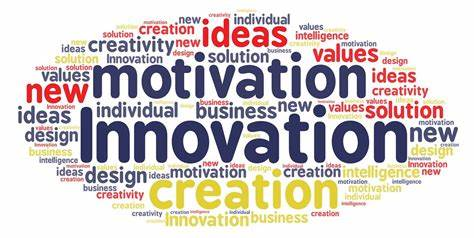

Innovedge means an innovation that gives you a different edge over others. This page is inspired by the thoughts of the CMI team(Competitiveness Mindset Institute) and the FLY program(Finding Leader in You). This is a
page based on our project to spread knowledge and information which we learned throughout the program
and to teach others about it.
Norms and Communications
Have you ever felt sad or frustrated by not being able to say your opinions in a meeting or a group discussion? Have you been criticized by your fellow members while speaking out your views about something?
If yes, then the group in which you participated is not following the norms which are necessary for the discussion.
Norms are specific rules that one should follow in life. It has a pivotal role in group activities especially in discussions, debates etc...It enables one to express oneself honestly and fearlessly. It
is very important for effective communication. It leads us to be good listener because it is an
essential quality to be a leader.
Chances are you think you’re a good listener. People’s appraisal of their listening ability is much
like their assessment of their driving skills, in that the great bulk of adults think they’re above
average.
Following are the general norms that one should follow to maintain the etiquette of a discussion:

What Great Listeners Actually Do?
Chances are you think you’re a good listener. People’s appraisal of their listening ability is much like
their assessment of their driving skills, in that the great bulk of adults think they’re above average.
In our experience, much management advice on good listening means doing three things:
● Not talking when others are speaking
● Letting others know you’re listening through facial expressions and verbal sounds etc.
● Being able to repeat what others have said, practically word-for- word
However, recent research that Dr Zenger and Folkman conducted suggests that these behaviors fall far
short of describing good listening skills. They analyzed data describing the behavior of 3,492 participants
in a development program designed to help managers become better coaches. As part of this program,
they identified those who were perceived as being the most effective listeners (the top 5%). They then
compared the best listeners to the average of all other people.
They found some surprising conclusions, along with some qualities they expected to hear:

Do you want to become a leader?

Innovativeness
Innovation is the practical implementation of ideas that results in the introduction of new goods or
services or improvement in offering goods and services. Innovativeness is described in the
Merriam-Webster dictionary as “the skill and imagination to create new things”. It basically means - thinking outside the box.

There is a simple way to follow an innovative mindset which is a SCAMPLER technique, where SCAMPLER stands for --
S --> Substitute
C --> Combine
A --> Adapt
M --> Modify
P --> Put to another use
L --> Low hanging Fruits
E --> Eleminate
R --> Reverse
Taking Initiative
Taking Initiative is to do something without being asked. But how to do that?

Perseverance
What comes to your mind when you hear the word 'Perseverance'?Who all comes in your mind?
Well, Perseverance is the quality that enables you to continue to try to do something that is difficult. It is the acting of keeping going on and on until the goal is reached.

To develop perseverance, it is very important that one should have goals and that too, smart. Everyone wants to be successful, right? And the first step to success is to persevere, never give up.
So for developing perseverance, make our goals smart. Now you all might be wondering, what are smart goals? What do you mean by it? Right? Don't worry. We're with you to help you guys out.

>
Conscientiousness
Conscientiousness means doing the right thing even when no one is looking. Conscientiousness was rated the most critical factor (88%) for competitiveness by
influential survey respondents, and also the most scarce (19%) among Indian professionals. Building up your conscientiousness will therefore yield large dividends.
Now the question is how to be conscientious?
Know what is right and do it.
Address the internal conflicts about what to do.
Develop the will to do the right thing.
Problem Solving
What do you mean by problem solving? Is problem solving important? The answer is,yes. Problem solving has a pivotal role in developing leadership skills.
Analyse the root cause of the problem and come up with the solutions. It's very easy to say, right. But how to do it?
Implement the 5- Why technique and Reverse brainstorming.